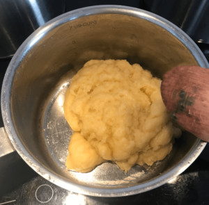
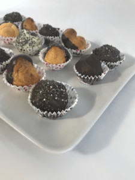
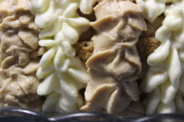

<?xml version="1.0" encoding="UTF-8"?><rss version="2.0"
	xmlns:content="http://purl.org/rss/1.0/modules/content/"
	xmlns:wfw="http://wellformedweb.org/CommentAPI/"
	xmlns:dc="http://purl.org/dc/elements/1.1/"
	xmlns:atom="http://www.w3.org/2005/Atom"
	xmlns:sy="http://purl.org/rss/1.0/modules/syndication/"
	xmlns:slash="http://purl.org/rss/1.0/modules/slash/"
	>

<channel>
	<title>Europe &#8211; Levia Wegner</title>
	<atom:link href="" rel="self" type="application/rss+xml" />
	<link>../../../index.html</link>
	<description>Baking &#38; Happiness</description>
	<lastBuildDate>Wed, 07 Feb 2024 18:59:13 +0000</lastBuildDate>
	<language>en-US</language>
	<sy:updatePeriod>
	hourly	</sy:updatePeriod>
	<sy:updateFrequency>
	1	</sy:updateFrequency>
	<generator>https://wordpress.org/?v=6.8.2</generator>

<image>
	<url>../../../wp-content/uploads/2021/06/Levia-L2-150x150.png</url>
	<title>Europe &#8211; Levia Wegner</title>
	<link>../../../index.html</link>
	<width>32</width>
	<height>32</height>
</image> 
	<item>
		<title>Palatschinken</title>
		<link>../../../palatschinken/index.html</link>
		
		<dc:creator><![CDATA[Levia Lydia Wegner]]></dc:creator>
		<pubDate>Fri, 03 Sep 2021 16:31:45 +0000</pubDate>
				<category><![CDATA[Breakfast]]></category>
		<category><![CDATA[Sweetness]]></category>
		<category><![CDATA[Austria]]></category>
		<category><![CDATA[Europe]]></category>
		<category><![CDATA[Sweet]]></category>
		<guid isPermaLink="false">https://www.leviawegner.com/?p=1045</guid>

					<description><![CDATA[Here's a breakfast idea you are going to absolutely love. This common european dish is amazing for your own breakfast. Imagine placing a stack of these delicious treats on the table. ]]></description>
										<content:encoded><![CDATA[<p>This dish is native to <strong>Austria</strong> and Bavaria. But it has a long history. This dish is popular in many European countries. Czech palačinke, Hungarian palacsinta, Romanian placinta. They don&#8217;t only share similar names, they are also a similar dish. They are made up of a thin pancake, rolled up and filled with jam.</p>
<h2>Recipe</h2>
<h3>Ingredients</h3>
<ul>
<li>250g Flour</li>
<li>2 Eggs</li>
<li>1/2l Milk</li>
<li>1 pinch Salt</li>
<li>Oil for the pan</li>
</ul>
<p>Filling/ Topping</p>
<ul>
<li>Jam (filling) (notes)</li>
<li>Powdered Sugar (dusting)</li>
</ul>
<h3>Instructions</h3>
<ol>
<li>Pour all the ingredients in a large mixing bowl.</li>
<li>Mix well with an electric mixer until there are no clumps left in the batter.</li>
<li>Heat the oil in a pan.</li>
<li>Pour two solid spoonfuls into the pan and cook on low heat.</li>
<li>Wait until the top of the pancake is close to solid before flipping it.</li>
<li>When it is finished, place it on a large plate.</li>
<li>Spread jam on one side of the pancake.</li>
<li>Roll the pancake up from the side with the jam on it.</li>
<li>Stack the palatschinken and dust with powdered sugar.</li>
<li>Serve and enjoy!</li>
</ol>
<h3>Notes</h3>
<p>Jam: You can use any jam you like. If you are not a great fan of jam, you can also use other spreads.</p>
]]></content:encoded>
					
		
		
			</item>
		<item>
		<title>Profiterole</title>
		<link>../../../profiterole/index.html</link>
		
		<dc:creator><![CDATA[Levia Lydia Wegner]]></dc:creator>
		<pubDate>Tue, 31 Aug 2021 09:53:47 +0000</pubDate>
				<category><![CDATA[Sweetness]]></category>
		<category><![CDATA[Europe]]></category>
		<category><![CDATA[France]]></category>
		<category><![CDATA[Sweet]]></category>
		<guid isPermaLink="false">https://www.leviawegner.com/?p=992</guid>

					<description><![CDATA[Everyone has heard of this pastry, but many people are scared off by the paper thin outside. Trust me, it is not too difficult and you can definitely pull it off. So give it a try!]]></description>
										<content:encoded><![CDATA[<p>This well known pastry was first made by a chef of Catherine Medici of Florence who was Italian but moved to <strong>France</strong> in the year 1540. The dough was first called pâté a Pantanelli or Pantarelli after the chef himself. The pastry evolved and he now used name, choux pastry was given due to it&#8217;s unusual shape after being baked. &#8216;Choux&#8217; is french for cabbage. The dough used for Profiterole can also be used to make other choux pastries such as eclairs. Don&#8217;t be scared off, try it yourself!</p>
<h2>Rezept</h2>
<h3>Ingredients</h3>
<p>Choux Pastry (notes)</p>
<ul>
<li>100g Butter</li>
<li>240g Water</li>
<li>140g Flour</li>
<li>4 Eggs</li>
</ul>
<p>Filling</p>
<ul>
<li>Vanilla Ice-cream</li>
<li>Vanilla Custard</li>
<li>Whipped Cream</li>
</ul>
<p>Chocolate Sauce</p>
<ul>
<li>250g dark Chocolate</li>
<li>240ml Heavy Cream</li>
</ul>
<h3>Instructions</h3>
<ol>
<li>Simmer the butter until it is almost melted, then pour in the water.</li>
<li>Mix in the flour and simmer for a minutes before removing it from the heat.</li>
<li>Mix well until the dough resembles that in the picture below.</li>
</ol>
<p><a href="../../../wp-content/uploads/2021/08/Dough.jpg"></a></p>
<ol start="4">
<li>Let it cool for 10 minutes.</li>
<li>Add in the eggs one at a time and mix thoroughly until the eggs are well incorporated.</li>
<li>Fill the dough into a piping bag with a round nozzle.</li>
<li>Cover a baking tray with baking paper. You can use butter to stick it down so it won&#8217;t curl.</li>
<li>Preheat the oven to 200ºC fan.</li>
<li>Pipe 2cm wide circles onto the paper. Pipe on the same spot without moving the nozzle.</li>
<li>Place the tray in the oven for 15 minutes.</li>
<li>Take the tray out and prick the pastries with a sharp knife.</li>
<li>Place the tray back in the oven for another 5-7 minutes.</li>
<li>Leave the shells to cool while you prepare your filling.</li>
<li>Once the shells are cool, fill them with whatever filling you choose.</li>
<li>Melt the chocolate on low heat in a water-bath.</li>
<li>Mix the heavy cream into the chocolate.</li>
<li>Pour the sauce over the profiteroles.</li>
<li>If you want, you can dip them in chocolate instead. You can then dip them in chia seeds like in the picture below.</li>
</ol>
<p></p>
<h3>Notes</h3>
<p class="p1">Choux pastry: This pastry looks quite tricky and it is definitely a step up from your average lemon loaf or banana bread. Profiterole are not too hard to make, though. There is not as much that can go wrong. It is actually fun to make.<span class="Apple-converted-space"> </span></p>
]]></content:encoded>
					
		
		
			</item>
		<item>
		<title>Coffee Cake</title>
		<link>../../../coffee-cake/index.html</link>
		
		<dc:creator><![CDATA[Levia Lydia Wegner]]></dc:creator>
		<pubDate>Mon, 30 Aug 2021 13:34:21 +0000</pubDate>
				<category><![CDATA[Baking Powder]]></category>
		<category><![CDATA[Cake]]></category>
		<category><![CDATA[Sweetness]]></category>
		<category><![CDATA[Europe]]></category>
		<category><![CDATA[Italy]]></category>
		<category><![CDATA[Sweet]]></category>
		<guid isPermaLink="false">https://www.leviawegner.com/?p=974</guid>

					<description><![CDATA[If you are looking for a trickier cake, something to really try your hand at baking and decorating, this is the cake for you. It is also extremely delicious and beautiful to look at. So why not give it a go?]]></description>
										<content:encoded><![CDATA[<p>Coffee Cake is believed to first have been made in Germany, however, this one is made with a mascarpone cream, making it attributable to <strong>Italy</strong>. Coffee cake wasn&#8217;t really invented, it was derived from other cakes. Mascarpone is originally from Italy and even got nominated the P.A.T. (Prodotto agroalimentare tradizionale or &#8220;traditional regional food product&#8221;) by the Italian government. This cake is made with a soft biscuit cake base and coffee flavoured mascarpone cream. It tastes similar to Tiramisu but is slightly heavier. It can be enjoyed whenever though it is best served cold so the cream doesn&#8217;t melt.</p>
<h2>Recipe</h2>
<h3>Ingredients</h3>
<p>Biscuit Cake (notes)</p>
<ul>
<li>6 Eggs</li>
<li>100g Flour</li>
<li>120g Cornstarch</li>
<li>200g Sugar</li>
<li>4Tbsp hot Water</li>
<li>1 1/2 Tbsp Instant Coffee</li>
</ul>
<p>For the soaking</p>
<ul>
<li>A cup of cold black coffee (notes)</li>
</ul>
<p>Mascarpone cream</p>
<ul>
<li>500g Mascarpone</li>
<li>800g Heavy cream</li>
<li>4Tbsp Icing Sugar</li>
<li>4tsp Instant Coffee</li>
<li>2Tbsp hot Water</li>
</ul>
<h3>Instructions</h3>
<ol>
<li>Beat the eggs until they have become fluffy.</li>
<li>Sift in the cornstarch, flour and sugar.</li>
<li>Make sure to mix well with an electric mixer to avoid clumps.</li>
<li>Integrate the instant coffee into the hot water before adding it into the batter.</li>
<li>Preheat the oven to 180ºC</li>
<li>But baking paper into a cake form and butter it.</li>
<li>Fill batter into the cake form.</li>
<li>Bake the cake for 30 minutes or until a toothpick stuck in the <strong>middle</strong> comes out clean.</li>
<li>Once the cake is done, take it out of the oven and use a long bread knife to cut it into three layers.</li>
<li>Leave the layers to cool while you prepare the mascarpone cream.</li>
<li>Use an electric mixer to mix the mascarpone and the heavy cream together.</li>
<li>Sift the icing sugar into the cream and mix well.</li>
<li>Separate the cream in two.</li>
<li>Mix the coffee into one of the halves.</li>
<li>Put the cream into the fridge for 30 minutes or until it is solid enough to be piped.</li>
<li>Place the cream into a piping bag with a round nozzle.</li>
<li>Use a baking brush to soak the cake base with the black coffee.</li>
<li>Pipe circles or spirals in both colours on the cake.Cool the cream before decorating the cake.</li>
</ol>
<p></p>
<ol start="19">
<li>Place the creams into piping bags with star nozzles and pipe the decorations.</li>
<li>Pipe the top in circles changing the colours.</li>
<li>For the side, start piping from the bottom and pull the piping bag up without lifting the bag to form the pattern of the white cream in the image below.</li>
</ol>
<p></p>
<ol start="22">
<li>Place the cake in the fridge for several hours or until serving.</li>
</ol>
<h3>Notes</h3>
<p>Biscuit cake: This is a tricky type of cake. It is easy to get something wrong. In fact, I have had huge trouble with it before. Sometimes it is not completely done in the middle. So make sure to do the toothpick trial exactly in the centre and don&#8217;t take the cake out too soon. If you take it out and put it back in too many times, it will collapse and become dry. Make sure the eggs are correctly beaten so you get the right texture. It should be fluffy on the inside.</p>
<p>Coffee: There is a distinct difference in the taste of instant coffee versus a good blend. This coffee&#8217;s main taste is coffee. So it is important to use a good coffee for the soak. Instant coffee is best for cream or the cake itself but I much prefer using coffee made with a coffee machine rather than instant coffee for the soak. It has a stronger more distinct taste to it.</p>
]]></content:encoded>
					
		
		
			</item>
		<item>
		<title>Crepes</title>
		<link>../../../crepes/index.html</link>
		
		<dc:creator><![CDATA[Levia Lydia Wegner]]></dc:creator>
		<pubDate>Sat, 28 Aug 2021 09:50:04 +0000</pubDate>
				<category><![CDATA[Breakfast]]></category>
		<category><![CDATA[Sweetness]]></category>
		<category><![CDATA[Europe]]></category>
		<category><![CDATA[France]]></category>
		<category><![CDATA[Sweet]]></category>
		<guid isPermaLink="false">https://www.leviawegner.com/?p=866</guid>

					<description><![CDATA[Looking for ideas for breakfast? Look no further. This simple and delicious Crepe recipe will have the entire family happy and well-fed.]]></description>
										<content:encoded><![CDATA[<p>Did you know, Crepes were not originally only a breakfast food in <strong>France</strong>? In fact, they were used like bread. In french folklore, the origin is set in the 13th century. It is remembered as a happy accident. A housewife spilling porridge onto a cooking stone. Other sources claim that crepes first appeared in the year 472 when they were offered to pilgrims visiting Rome. No matter where they first appeared, one thing is certain, and that is that here they are. And they are probably here to stay. It is a loved breakfast or even dessert and it is quite simple to make.</p>
<h2>Recipe</h2>
<h3>Ingredients</h3>
<ul class="ingredientes">
<li>125g Flour</li>
<li>2 Eggs</li>
<li>250ml Milk</li>
<li>50g Butter</li>
<li>5g Sugar</li>
<li>1 pinch Salt</li>
<li>1Tbsp Butter for the pan</li>
</ul>
<p>Whipped Cream (alternatively, use store-bought whipped cream)</p>
<ul>
<li>250g Heavy Cream</li>
<li>20g Powdered Sugar (more or less depending on preference)</li>
</ul>
<h3>Instructions</h3>
<ol>
<li>Sift the flour, sugar and salt together into a small bowl.</li>
<li>Melt the butter over medium heat, adding in the milk once the butter is melted.</li>
<li>Crack the eggs into the milk mixture and use an electric mixer to mix the ingredients.</li>
<li>Spoon the flour into the milk bit by bit mixing well to avoid clumps.</li>
<li>Keep mixing until the batter is smooth.</li>
<li>Melt the tablespoon of butter in a large pan.</li>
<li>Pour two solid spoons full or one deep soup ladle full of batter onto the pan.</li>
<li>Leave to cook through until the upper side is solid, before flipping the crepe.</li>
<li>Put the crepe onto a plate while preparing the whipped cream.</li>
<li>Beat the heavy cream on low speed until it is thick before adding in the powdered sugar gradually.</li>
<li>The whipped cream should form stiff peaks when you take out the mixer.</li>
<li>Fill the cream into a piping bag. You can use a star attachment to give the cream form.</li>
<li>Fill the crepes with cream and sprinkle with a bit of powdered sugar.</li>
<li>Et voilà!</li>
</ol>
<h3>Variations</h3>
<p>Filling: Crepes, like other pancakes, can be enjoyed with an assortment of fillings and toppings. Some more usual than other. Common crepe topping are:</p>
<ul>
<li>Lemon and sugar</li>
<li>Jam</li>
<li>Nutella</li>
<li>Fruit</li>
<li>Whipped cream</li>
</ul>
<p>And, my personal favorite:</p>
<ul>
<li>Dulce de Leche (Caramel sauce) and Cheese</li>
</ul>
<p>Whatever you choose to put on them, crepes are delicious idea for every breakfast or brunch.</p>
<p>&nbsp;</p>
]]></content:encoded>
					
		
		
			</item>
		<item>
		<title>Spanakopita</title>
		<link>../../../spanakopita/index.html</link>
		
		<dc:creator><![CDATA[Levia Lydia Wegner]]></dc:creator>
		<pubDate>Thu, 26 Aug 2021 18:57:59 +0000</pubDate>
				<category><![CDATA[Savoury]]></category>
		<category><![CDATA[Europe]]></category>
		<category><![CDATA[Greece]]></category>
		<guid isPermaLink="false">https://www.leviawegner.com/?p=902</guid>

					<description><![CDATA[If you prefer savoury, this recipe is definitely a must try. The crispy filo pastry combined with the creamy filling and the salty feta cheese topping is a perfect orchestra of tastes. ]]></description>
										<content:encoded><![CDATA[<p>The Spanakopita recipe is believed to have been born in <strong>Greece</strong> over 400 years ago. It is similar to the Turkish dish ispanakli. It is a typical dish all across Greece. This savoury delight consists of a filo pastry filled with spinach and different soft cheeses. This recipe uses curd and a feta topping. It is also made with creamed Spinach to give it more moisture. Most chefs will personalise the recipe by adding their own flare. Be it herbs or cheeses, the smallest of changes in ingredients can have a huge impact on the final result. However, some people do not like spinach and, making a huge pie can be a bit much. This recipe is meant to be made in a 3 by 4 standard muffin tray. That way, you have 12 little pies.</p>
<h2>Recipe</h2>
<h3>Ingredients</h3>
<ul>
<li>Filo dough</li>
<li>250g Frozen Creamed Spinach</li>
<li>300g Curd</li>
<li>200g Feta Cheese</li>
<li>50ml Olive Oil</li>
<li>Salt | Pepper</li>
</ul>
<h3>Instructions</h3>
<ol>
<li>Defrost the cream spinach.</li>
<li>Put the olive oil in a large pan and cook the creamed spinach for 5-7 minutes or until it is hot.</li>
<li>Mix the spinach with the curd and season with salt and pepper.</li>
<li>Preheat the oven to 210ºC.</li>
<li>Next, lay out the dough and cut out circles using either a sharp knife or scrissors.</li>
<li>Put the dough in the holes of a muffin tray.</li>
<li>Fill the dough with the spinach-curd mixture.</li>
<li>Cut thin slices of feta cheese and place them on top of the pies.</li>
<li>Bake the pies for 12-15 minutes.</li>
<li>Enjoy!</li>
</ol>
<h3>Variations</h3>
<p>You can always add more seasoning to the filling. You can also add diced onions or red bell peppers. If there is a specific type of cheese you prefer to feta or want to add, feel free to.</p>
<p>&nbsp;</p>
]]></content:encoded>
					
		
		
			</item>
		<item>
		<title>Chocolate Chip Pfannkuchen</title>
		<link>../../../chocolate-chip-pfannkuchen/index.html</link>
		
		<dc:creator><![CDATA[Levia Lydia Wegner]]></dc:creator>
		<pubDate>Thu, 05 Aug 2021 16:22:21 +0000</pubDate>
				<category><![CDATA[Baking Powder]]></category>
		<category><![CDATA[Breakfast]]></category>
		<category><![CDATA[Sweetness]]></category>
		<category><![CDATA[Europe]]></category>
		<category><![CDATA[Germany]]></category>
		<category><![CDATA[Sweet]]></category>
		<guid isPermaLink="false">https://www.leviawegner.com/?p=858</guid>

					<description><![CDATA[If you are in charge of making breakfast today, try this simple and delicious recipe. It can be changed for every picky eater. Give it a try!]]></description>
										<content:encoded><![CDATA[<p>There are many typically german breakfasts but in <strong>Germany</strong>, there is also a variant of the well known pancakes. Pancakes in general reach as far back as the Stone Age. It has appeared often in literature and everyone can visualise a pancake. However, over time, each region or country went adapting the familiar recipe and presenting it in different ways. The following recipe is the German version of this very nutritious food. It is a very easy recipe and, who doesn&#8217;t enjoy a nice Pfannkuchen for breakfast?</p>
<h2>Recipe</h2>
<h3>Ingredients</h3>
<ul>
<li>300g Flour</li>
<li>300ml Milk</li>
<li>2 Egg</li>
<li>6Tbsp Sugar</li>
<li>2tsp Vanilla Extract</li>
<li>pinch Salt</li>
<li>1 1/2 Tbsp Chocolate Chips</li>
</ul>
<h3>Instructions</h3>
<ol>
<li>Mix the salt, sugar and flour.</li>
<li>Whisk the eggs into the milk and add the vanilla extract.</li>
<li>Use an electric mixer to mix the milk mixture into the flour.</li>
<li>Mix well to make sure there are no clumps left.</li>
<li>Integrate the chocolate chips into the batter.</li>
<li>Melt a bit of butter in a small pan.</li>
<li>Pour some of the batter into the centre of the pan and let it fill the pan.</li>
<li>Cook on low heat until bubbles form on the top and it is mostly cooked through.</li>
<li>Flip the pancake and cook for a few more minutes.</li>
<li>Transfer onto a plate.</li>
<li>And enjoy with whatever you like best!</li>
</ol>
<h3>Variations</h3>
<p>Similar to American pancakes or Crepes, Pfannkuchen can be enjoyed with whatever you like best. From caramel sauce and whipped cream to nutella.</p>
<p>If you want to make savoury Pfannkuchen, you can leave out the chocolate chips or substitute them for bacon.</p>
<p>&nbsp;</p>
]]></content:encoded>
					
		
		
			</item>
		<item>
		<title>Oatmeal biscuits</title>
		<link>../../../oatmeal-cookies/index.html</link>
		
		<dc:creator><![CDATA[Levia Lydia Wegner]]></dc:creator>
		<pubDate>Sun, 25 Jul 2021 14:35:28 +0000</pubDate>
				<category><![CDATA[Baking Powder]]></category>
		<category><![CDATA[Sweetness]]></category>
		<category><![CDATA[England]]></category>
		<category><![CDATA[Europe]]></category>
		<category><![CDATA[Sweet]]></category>
		<guid isPermaLink="false">https://www.leviawegner.com/?p=440</guid>

					<description><![CDATA[Looking for the perfect snack for your hike? These biscuits are just what you need. They are absolutely delicious and, on top of everything, extremely healthy. ]]></description>
										<content:encoded><![CDATA[<p>Oatmeal cookies can be traced back to <strong>England</strong>. The reach back all the way into the 1800s. It is speculated to have derived from oatcakes. Oatcakes used to be carried by soldiers to give them an energy boost. The first oatmeal raisin cookie recipe is believed to trace back to 1896 in Fannie Farmer&#8217;s Cookbook. This recipe is much healthier than the usual recipe. It has no butter or egg. It comes with a large vitamin boost and much energy. These biscuits are perfect to snack on on a hike.</p>
<h2>Recipe</h2>
<h3>Ingredients</h3>
<ul>
<li>100g Coconut Butter</li>
<li>200g Cane Sugar</li>
<li>1 Banana</li>
<li>1/2tsp Baking Powder</li>
<li>1/2tsp Salt</li>
<li>140g Oats</li>
</ul>
<h3>Instructions</h3>
<ol>
<li>Beat the butter until smooth and incorporate the sugar.</li>
<li>Use a fork to mash the banana and add it into the butter.</li>
<li>Mix the salt and baking powder with the flour.</li>
<li>Incorporate the flour into the butter.</li>
<li>Leave the dough to cool for 30 minutes.</li>
<li>Form the dough into cookies.</li>
<li>Bake at 170ºC for 10-15 minutes.</li>
<li>Remove the cookies form the oven and let them cool.</li>
<li>Do not try to remove the cookies from the tray until cooled or they will crumble apart.</li>
<li>Enjoy!</li>
</ol>
]]></content:encoded>
					
		
		
			</item>
		<item>
		<title>Focaccia</title>
		<link>../../../focaccia/index.html</link>
		
		<dc:creator><![CDATA[Levia Lydia Wegner]]></dc:creator>
		<pubDate>Thu, 17 Jun 2021 16:45:51 +0000</pubDate>
				<category><![CDATA[Bread]]></category>
		<category><![CDATA[Savoury]]></category>
		<category><![CDATA[Yeast Dough]]></category>
		<category><![CDATA[Europe]]></category>
		<category><![CDATA[Italy]]></category>
		<guid isPermaLink="false">https://www.leviawegner.com/?p=402</guid>

					<description><![CDATA[Feel like eating something Italian but not in the mood for a huge, cheese-covered pizza? This recipe is simple and easy to follow and you will have the steaming bread on your plate in a jiffy!]]></description>
										<content:encoded><![CDATA[<h2>Destination</h2>
<p>Heading to Italy</p>
<h2>Overview</h2>
<p>Focaccia is a typical Italian recipe believed to have originated before the Roman Empire was formed. Some historians also hold the believe it originated in Ancient Greece. It is important to acknowledge that unrisen flat bread has also long been made throughout the Middle East. However, it can be confirmed that recipes similar to this one can be found in Turkey, France, Spain and Greece. It is also speculated to be the origin of pizza dough. Despite its rich history, it is an easily approachable recipe. It can be varied by adding toppings before baking or filling the finished bread with cheese or ham.</p>
<h2>Recipe</h2>
<h3>Ingredients</h3>
<ul>
<li><span style="font-weight: 400;">500g Flour</span></li>
<li><span style="font-weight: 400;">300ml Water</span></li>
<li><span style="font-weight: 400;">60ml Olive Oil (extra for greasing the pan and for the top)</span></li>
<li><span style="font-weight: 400;">2tsp Sugar</span></li>
<li>2tsp Salt</li>
<li>1package(25g) Fresh Yeast</li>
<li>Sea Salt and Rosemary</li>
</ul>
<h3>Instructions</h3>
<ol>
<li>In a metal bowl, warm the water until lukewarm and add the sugar. Take the water off the heat. Crumble the yeast into the water and mix well. Let the mixture set for 5-10 minutes to proof the yeast.</li>
<li>Put the flour in a large mixing bowl and add the salt on one side. Pour the yeast mixture on the other side. Try to make sure that yeast and salt don&#8217;t touch directly until it is totally unavoidable! Salt turns yeast off. Add the oil.</li>
<li>Use a fork to mix the mixture until you can knead it by hand. Knead until obtaining a smooth dough.</li>
<li>Cover the dough with a tea towel and let it to rise for 45 to 60 minutes.</li>
<li>When the dough has risen, oil a baking pan and tilt the dough into it. Spread the dough until it is about 2cm thick.</li>
<li>Make deep holes in the dough and fill them with a bit of rosemary. Sprinkle the focaccia with salt and cover it with a tea towel. Leave to rise for another 20 minutes.</li>
<li>When the dough has finished rising, sprinkle a bit of oil over it.</li>
<li>Bake the focaccia on 200ºC for 20 minutes or until golden.</li>
<li>Cut and serve warm with a bit of olive oil and salt.</li>
</ol>
<h3>Variations</h3>
<p>Focaccia, being bread, can be eaten in a thousand and one ways. With ham and cheese filling or with tomatoes and olives intead of rosemary and salt on top. Anything you like can be added to it. It has a lot of room for your creativity and prefferences.</p>
<p>You can also vary the choice of flour. For example, you can use 250g of spelt flour and 250g of plain flour. That combination is nice with a cheese and onion topping or cherry tomatoes and black olives.</p>
]]></content:encoded>
					
		
		
			</item>
		<item>
		<title>Apple Rolls</title>
		<link>../../../apple-rolls/index.html</link>
		
		<dc:creator><![CDATA[Levia Lydia Wegner]]></dc:creator>
		<pubDate>Mon, 07 Jun 2021 15:29:07 +0000</pubDate>
				<category><![CDATA[Yeast Dough]]></category>
		<category><![CDATA[Europe]]></category>
		<category><![CDATA[Germany]]></category>
		<category><![CDATA[Sweet]]></category>
		<guid isPermaLink="false">https://www.leviawegner.com/?p=138</guid>

					<description><![CDATA[Are you feeling like travelling to Germany without leaving your own kitchen? These delicious apple rolls are exactly what you need. Spiced with a bit of cinnamon or filled with plums or raisins, they can easily be adapted to fit everyones likes.]]></description>
										<content:encoded><![CDATA[<h2>Destination</h2>
<p>Heading to <em><strong>Germany</strong></em></p>
<h2>Overview</h2>
<p>Apple Rolls are pretty similar to cinnamon rolls when it comes to the dough but they differ in the filling. There are many ways to give this recipe a personal twist. Apfel-Rosinen-Schnecken are typically eaten in Germany. They are made with yeast dough and apple compot. Yeast dough is quite tricky when getting started but it becomes easier and even fun to make it the more times you do it.</p>
<h2>Recipe</h2>
<h3>Ingredients</h3>
<p>For the dough</p>
<ul>
<li>500g Flour</li>
<li>250ml Milk</li>
<li>75g Butter</li>
<li>25g fresh Yeast</li>
<li>70g Sugar</li>
<li>1 package Vanilla Sugar</li>
<li>pinch of Salt</li>
</ul>
<p>For the filling</p>
<ul>
<li>500g of Apples (5 small apples)</li>
<li>100g of Brown Sugar</li>
<li>optional: Cinnamon, Raisins, Plums</li>
</ul>
<p>For the topping</p>
<ul>
<li>64g Powdered Sugar</li>
<li>1Tbsp Milk</li>
</ul>
<h3>Instructions</h3>
<p>1- Cut the apples and place them on a baking tray covering them with the sugar, leaving them to soak.</p>
<p>2- Warm the milk and place the butter inside. When melted, add sugar, vanilla sugar and a pinch of salt.</p>
<p>3- Remove the mixture from the heat and crumble the fresh yeast, adding it to the mixture and stirring thoroughly.</p>
<p>4- Add the milk-yeast mixture to the flour and knead it until obtaining a homogenous dough.</p>
<p>5- Cover the dough and let it rise for 45 minutes.</p>
<p>6- Cover a large area with flour and roll out the dough forming a rectangle.</p>
<p>7- Blend the apples until obtaining a consisten compot.</p>
<p>8- Spread the compot on the dough.</p>
<p>9- Roll up the dough and cut it into 4cm thick rolls.</p>
<p>10- Place the rolls on the baking tray with the cut side up.</p>
<p>11- Cover the tray and let the rolls rise for another 30 minutes.</p>
<p>12- Heat the oven to 250ºC and bake the apple rolls for 10 to 15 minutes.</p>
<p>11- Mix the powdered sugar with the milk and spread it over the apple rolls.</p>
<h3>Variations</h3>
<p>Cinnamon- Looking to spice the apple compot with cinnamon? No problem. Sprinkle some cinnamon on the apples before leaving them to soak.</p>
<p>Raisins &#8211; Raisins and Apples go hand in hand in many recipes. I haven&#8217;t included them in the recipe itself but you can add them into the apple compot before spreading it on the dough.</p>
<p>Plums &#8211; If you want to add a plum centre, align plums on the side from which you will roll up the dough. That way, your apple rolls will have a nice plum centre.</p>
]]></content:encoded>
					
		
		
			</item>
	</channel>
</rss>

<!-- plugin=object-cache-pro client=phpredis metric#hits=920 metric#misses=4 metric#hit-ratio=99.6 metric#bytes=571882 metric#prefetches=90 metric#store-reads=20 metric#store-writes=3 metric#store-hits=99 metric#store-misses=1 metric#sql-queries=4 metric#ms-total=1335.15 metric#ms-cache=26.64 metric#ms-cache-avg=1.2108 metric#ms-cache-ratio=2.0 -->
